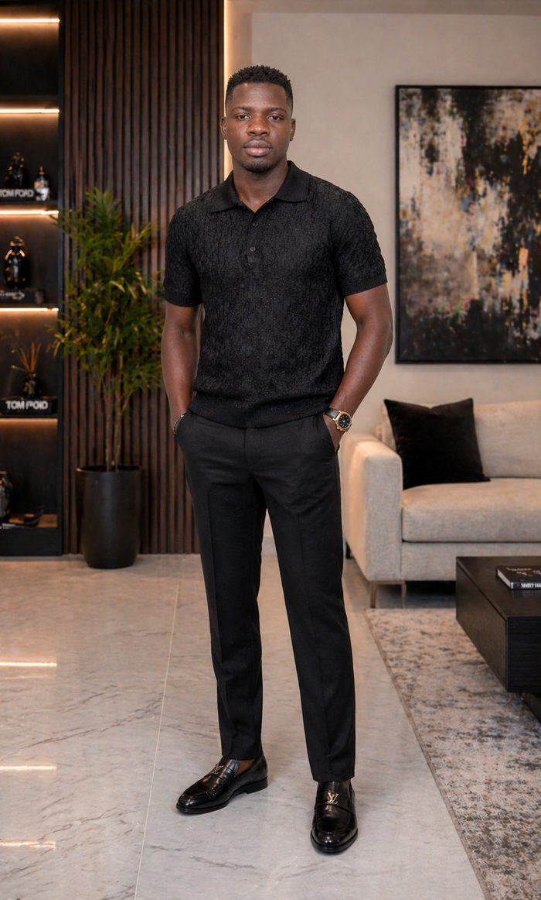

01
AI SYSTEMS · PYTHON
AIDE Ultra
A local AI runtime project exploring model management, tool use, a server interface and Windows workflows.
Project details ↗SOFTWARE DEVELOPER · KAMPALA, UGANDA
I'm Bruce Bana. I work across AI tools, developer software and mobile applications, with a focus on making useful ideas work in the real world.

Bruce Bana Independent developer
01 / SELECTED PROJECTS
AI SYSTEMS · PYTHON
A local AI runtime project exploring model management, tool use, a server interface and Windows workflows.
Project details ↗DEVELOPER TOOLS · NODE.JS
A command-line assistant project focused on multi-provider AI workflows, agent tools and developer automation.
Project details ↗ANDROID · KOTLIN
A native Android media application built with Kotlin and Jetpack Compose.
View repository ↗02 / HOW I WORK
I enjoy understanding how systems fit together, testing ideas and refining the details that make software dependable and easier to use.
More about my approach ↗HAVE SOMETHING IN MIND?